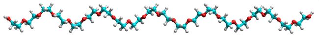

Polyethylene glycol
Many aqueous solutions may separate into distinct aqueous phases.
 Introduction to aqueous biphasic systems
Introduction to aqueous biphasic systems
Although often not recognized, there are many aqueous biphasic systems in nature. Many intracellular liquid compartments form by phase separation from the cytoplasm [3084] and the nucleus. These compartments do not have membranes. An example is the nucleolus, the ribosome production site inside the nucleus containing many proteins and ribonucleic acids. It has been suggested that the selective partitioning of therapeutics within compartments contributes to drug pharmacodynamics and that altering the properties of the aqueous biphasic systems affects the concentration and activity of drugs [4023]. Different water clustering coexists within a mixture of phase-forming polymers until polymer concentrations exceed thresholds when the domains become immiscible leading to phase separation [3872]. The hydrogen bonding in the separate phases is an important factor in phase separation [4391] and correlates with their hydrophobic and electrostatic properties.
The addition of salts to water will segregate into their preferred water structuring [1994]. Aqueous biphasic systems occur when specific solutes cause an aqueous solution to separate into two aqueous phases. Beijerinck first noted, in 1896, the 'incompatibility' of certain polymers in aqueous solution. In this case, two phases form when agar is mixed with soluble starch or gelatin. Since then, many immiscible biphasic aqueous systems have been found utilizing hydrophilic polymers in aqueous solution; for example, poly(ethylene glycol) (PEG, HO-(CH2-CH2-O)n-H where n is the degree of polymerization) c. Different polymers often do not mix well. The entropy of a mixture of extended polymers is lowered by a factor roughly equal to the average degree of polymerization compared with a mixture of the monomers. Mixing may be sufficient to cause the separation into homogeneous phase regions, each containing a different polymer. The most thoroughly investigated is the aqueous dextran-PEG system, where dextran forms the more hydrophilic, denser, lower phase, and PEG the more hydrophobic, less dense, upper phase. Extensive examinations of in vitro [171] and in vivo [264] aqueous phase separations are available, including the separation of metal ions [3499].
Phases form when limiting concentrations of the polymers are exceeded. Both phases contain mainly water (typically 70-90% w/w water) and are enriched in diofferent polymers. The limiting concentrations depend on the type and molecular weight of the polymers and the pH, ionic strength and temperature of the solution. Some polymers form a two-phase system by themselves; PEG forming the upper more-hydrophobic phase in the presence of fairly concentrated solutions of citrates, phosphates, or sulfates or at higher temperatures (see below). Such aqueous liquid-liquid two-phase systems are finding increasing use in the extractive separation of labile biomolecules such as proteins. d They offer mild conditions due to the low interfacial tension between the phases (that is, about 400-fold less than that between water and an immiscible organic solvent), allowing small droplet size, large interfacial areas, efficient mixing under very gentle stirring, and rapid partition. The polymers also have a stabilizing influence on most proteins. A great variety of separations have been achieved, by far the most important being the separation of enzymes from broken crude cell material. Separation may be accomplished in a few minutes, minimizing the harmful action of endogenous proteases. The systems have also been used successfully to separatie different types of cell membranes, organelles, and actinide ions, the purification of enzymes, extractive bioconversions. Although sometimes perceived as due to polymer incompatibilities, the properties of these biphasic systems are mainly attributed to the mismatch between aqueous pools of lower and higher density water. Each phase may be considered a different, although aqueous, solvent with properties determined by its structuring (see, for example, [171]).
Phase diagram for PEG - K3PO4 from [2667]
As an example of an aqueous 2-phase system, see the phase diagram for the PEG-2000 K3PO4 mixture, given on the right [2667]. The compositions of the miscible one-phase solution are shown filled in light green. If a solution is made 0.14 m PEG-2000 and 0.6 m K3PO4 (point B), it is outside the one-phase area and splits into two phases (A and C) with different compositions (A = 0.29 m PEG-2000, 0.23 m K3PO4; C = 0.03 m PEG-2000, 0.9 m K3PO4, in the example ). The phase volumes are such that the masses of solutes balance; thus, the mass of PEG in A plus the mass of PEG in C must equal the mass of PEG in B. The tie lines show alternative starting compositions that coincide at the critical point where the length of
the tie line approaches zero.
Deep eutectic solvents e have been proposed as phase-forming compounds of aqueous biphasic systems [3795], resulting from the interaction of a hydrogen-bond acceptor and a hydrogen-bond donor. e The ability of the hydrogen-bond donors may be correlated with the logarithm of their octanol-water partition coefficients (logP), [3077]. For example, the logPs of glucose, glycerol, ethylene glycol, ethanol, and n-propanol are -2.93, -1.84, -1.21 -0.16, and +0.36, respectively, with decreasing hydrophilicity with increasing logP. The most hydrophobic hydrogen-bond donors tend to form organic-aqueous two-phase systems.
The distribution of organic solutes between the aqueous phases is a function only of the difference in the polymer concentration between the phases and depends little or not at all on the salt used [2667].
PEG [3297] usually
has a far higher concentration in the upper (low-density)
phase of such solutions despite its inherent density being
higher than water. This concentration, together with the properties of
this PEG phase, encourages the belief that it creates a predominantly low-density water environment
due to its partially hydrophobic character,
in turn mainly determined by the methylene groups. Further
proof of this may be seen using microwave dielectric measurements,
which show the water surrounding PEG to be ordered, whereas that surrounding more hydrophilic polymers
is disordered [338].
Also, the dissolution of PEG is exothermic (and increasingly
exothermic with PEG size), in line with a shift in the ES CS equilibrium towards the more ordered ES structure. It is interesting and perhaps not merely fortuitous
that the diameter (4.9 Å) of the favored PEG helix (formed by trans, gauche, trans links across the C-O-C-C,
O-C-C-O, C-C-O-C bonds) is the same as the diameter of the spines of the ES
water cluster (4.7 Å) formed by pentagonal
boxes, the ether oxygen (O-C-C-O) distances (2.88 Å) are
close to the O···O distances (2.84 Å)
in water and the next ether oxygen (O-C-C-O-C-C-O) (5.6 Å)
distances are close to the following vertex distance on opposite
sides of the pentagonal boxes (5.4 Å). a
CS equilibrium towards the more ordered ES structure. It is interesting and perhaps not merely fortuitous
that the diameter (4.9 Å) of the favored PEG helix (formed by trans, gauche, trans links across the C-O-C-C,
O-C-C-O, C-C-O-C bonds) is the same as the diameter of the spines of the ES
water cluster (4.7 Å) formed by pentagonal
boxes, the ether oxygen (O-C-C-O) distances (2.88 Å) are
close to the O···O distances (2.84 Å)
in water and the next ether oxygen (O-C-C-O-C-C-O) (5.6 Å)
distances are close to the following vertex distance on opposite
sides of the pentagonal boxes (5.4 Å). a
Polyethylene glycol
Model building shows that optimum hydrogen bonding would tend to distort this PEG helix, however. As determined by viscosity, the strongly-held hydration increases from two molecules of water per PEG monomer at very low polymerization (tetramer) to 5 molecules of water per PEG monomer for 45-mer [576a], b showing that the extent of water clustering increases with PEG size. The total number of water molecules associated with each PEG monomer is about 32 [1958], or out to about 2-3 nm radius. The partitioning of proteins into the hydrophobic PEG phase shows strong sensitivity to the protein's surface hydrophobicity (partition increasing with surface hydrophobicity) and depends on the PEG size; increasing with PEG molecular mass [597], in line with the extent of water clustering. Increasing PEG size and concentration both raise the proteins' effective hydration as the PEG is excluded from the proteins' surface [953]. However, when the PEG phase becomes too ordered (for example, at higher PEG size), partitioned proteins are excluded [598] due to the reduced available water content.
PEG solubility, showing cloud point
An interesting and revealing phenomenon occurs in PEG solutions as the temperature is raised. The solution at low temperatures separates into two phases (PEG-rich and PEG-poor). At higher temperatures, it separates at the cloud-point (where the liquid phase turns cloudy) and at even higher temperatures it reverts to a clear single phase. This phenomenon is shown schematically opposite and may be explained as the PEG creating a low-density water environment with decreased entropy [451]. At low temperatures, a solution is formed due to the enthalpy of hydrogen-bonding between the PEG and the water more than compensating for the entropy lost in forming the low-density water. This entropy loss is required due to the hydrophobicity of the methylene groups but is not as great as the water is somewhat ordered already at lower temperatures. The entropy cost is greater at the cloud point as the water is no longer naturally as structured, and two phases develop; probably involving extended chains in the one continuous phase and aggregated chains in the other cloudy phase [1085]. With the reduction of water-water interactions at much higher polymer concentrations, the two-phase area may close up, with the solution returning to a single-phase solution [3388]. It has been shown that there is an opposite concentration dependence of the less polar trans and more polar gauche conformations of both the C–C and C–O bonds at low and at high water content, respectively [3646]. The stability diagram is more complex in solutions containing colloids, such as proteins, where gels form at low temperatures arresting phase separation [3665].
An aqueous biphasic solution may be prepared using hydrazinium trifluoroacetate, which has a water molar fraction, xw, of 0.84 at ambient pressure [4337]. The supercooled ionic solution undergoes a sharp, reversible liquid-liquid phase transition at ambient pressure, similar to pure water at lower temperatures and higher pressures.
The stronger hydrogen bonding in D2O, relative to H2O, is expected to raise the cloud point. At higher temperatures still, the water possesses excess energy and cannot be structured by the PEG. This reduces the entropic cost, so allowing a solution to form once more. When small PEG molecules are used, for example, in PEG400 [1131], the PEG may aggregate rather than create a second aqueous phase, but the behavior otherwise is similar. Other work, however, indicates that water competes successfully for hydrogen-bonding to ethylene glycol compared with ethylene glycol to other ethylene glycol molecules [1244], so the situation may be finely balanced and depend on temperature, concentration, and molecular size. This phenomenon has been used in reverse osmosis where nonionic glycol polymers are used as the osmotically-active draw agent and regenerated by use of the cloud point [2106].
Low relative molecular mass (molecular weight) soluble materials may form large clusters in an aqueous solution without being biphasic. Thus, highly concentrated solutions of glucose form smaller (≈ 10 nm) and larger (≈ 100 nm) scale inhomogeneities. These clusters contain large amounts of water but are distinct from the rest of the solution having a glucose concentration six-times higher [2165].
Anions have a distinct effect on the cloud point in line with the Hofmeister Series (cloud point lowering: SCN− < I− < Br− < Cl− < F− < OH− < SO42− < HPO42- < CO32− < PO43−); the greater lowering of the cloud point is in line with greater surface charge density [752], stronger hydration, greater tendency to avoid low-density water, and the greater destruction of the natural structuring of the water. An oppositely-ordered compensating effect on the cloud point has been recognized due to the binding of the anions to the polymer surface [896]. This tends to raise the cloud point at lower salt concentrations as the bound salt increases the polymer net charge and, hence, solubility. The relative effect of the ions is the reverse of the Hofmeister series just given with weakly hydrated ions binding best, i.e., SCN− having the most significant effect and ionic kosmotropes below Cl− having a negligible effect. The Hofmeister effects on poly(propylene oxide) phase separation process have been described by a balance between those interactions [1922].
Cations have a lesser but opposite effect to anions with chaotropes (for example, NH4+) tending to lower the cloud point, but kosmotropes (for example, Li+) raising it. Exceptionally, however, some di- and trivalent cations such as Mg2+ and Zn2+ act counter to their normal Hofmeister behavior, due presumably to their specific chelation to oxygen atoms in the PEG molecules [752].
Anions and cations distribute themselves differently between the phases depending on their affinity for low or higher density water but with the requirements that the phases be electrically neutral and iso-osmotic, producing an interfacial potential difference, which may aid the partitioning of charged biomolecules. Thus, sulfate and phosphate ions prefer the bottom phase. Consequently,, negatively charged proteins are partitioned into the upper PEG phase, allowing more sulfate or phosphate ions to partition into their preferred lower phase. Preference for the PEG-rich or PEG-poor phase is related to the Hofmeister Series for the structuring ability of the salts, particularly the anions (for example, preference for PEG-rich phase: I− > Br− > Cl− > F− > SO42−; Cs+ > Na+ > Ba2+ > Ca2+; preference for PEG-poor phase: SO42− > F− > Cl− > Br− > I−) [171]. A similar Hofmeister Series effect is noticed intensifying the incompatibility between two polymers such as polyethylenimine-PEG, or dextran-PEG, by increasing the strongly hydrated (CS-forming) concentration of anions, such as sulfate [340].
An extreme in aqueous biphasic separations, using just H2O, can be shown using mixtures of low-density ultraviscous liquid (LDL) and high-density ultraviscous liquid (HDL) within supercooled water at temperatures below the second critical point [3623]. Using molecular dynamics, NaCl partitions into the denser HDL and Ne partitions into the less dense LDL fraction.
1-butyl-3-methylimidazolium
tetrafluoroborate
Ionic liquids are salts that form liquids at low temperatures [4340]. They have large ions with low surface charge density that form short-lived ion pairs and have difficulty crystallizing. Examples are ethyl ammonium nitrate (C2H5)NH3+·NO3− (m.pt. 12 °C) and 1-butyl-3-methylimidazolium tetrafluoroborate (m.pt. -80 °C). Some ionic liquids decompose n distillation (1-butyl-3-methylimidazolium nitrate decomposing to give flammable gases) while others distill below 300 °C as ion pairs to reform the liquid phase (1-decyl-3-methylimidazolium, bis{(trifluoromethyl)-sulphonyl}amide). Water is often present in ionic liquids, absorbing from the atmosphere. The effect this water has on the ionic liquids has been investigated; with the water's librational and rotational dynamics increasing with increasing concentration, while the translational dynamics slow down [4341]. Ionic liquids have proven to be an alternative to polymers in the formation of aqueous biphasic systems. The addition of common aqueous salt solutions induces ionic-liquid-based aqueous biphasic systems, with the salting-out ability of the anions and cations following their Hofmeister Series [1911].
The interfaces between two aqueous phases form an exceptional case of interfacial water [2680]. Whereas the water makes up most of both phases and is continuous across the interface, the composition and concentration of the solutes vary substantially across the interface. Additionally, an electric potential may arise between the two solutions (Donnan potential). Calculations indicate excess water at the interface, over a distance of ≈ 20 nm, with resultant lower interfacial tension (0.01 - 1.0 μN ˣ m−1) [2226]. Any charge difference across the interface, and consequential osmotic pressure, must be more than compensated by the incompatibility of the two phases [2226]. Polyelectrolytes can strongly adsorb at the interface and stabilize aqueous biphasic systems, including water-in-water emulsions [2788].
Aqueous biphasic phase separation of biopolymers is the driving force for assembling membrane-less biomolecular condensates, such as the membrane-less protein granules (keratohyalin granules) within the terminally differentiating cell layers of mammalian epidermis [3916].
A different form of the aqueous biphasic system is formed by associating molecules. Such a biphasic system occurs where a water-soluble molecule self-associates but remains soluble, thus creating a soluble polymeric mass that behaves as a distinct aqueous phase [1696]. This happens in some protein-rich areas within cells.
a Note that the polymers formed with either one (-O-C-O-C-O-) or three (-O-C-C-C-O-C-C-C-O-) methylene groups between the oxygen atoms are both insoluble in water. The reason, however, is not so much that the O···O distances (2.18 Å and 4.79 Å respectively) fit less well with the water cluster spacing but rather that the molecules form almost-linear extended (rather than helical) chains. These have a pronounced hydrophobic character with a high intra-molecular attraction. [Back]
b Dielectric studies show 3.7 hydration water molecules per monomer residue [576b]. [Back]
c Poly-(ethylene glycol) (PEG, n HOCH2-CH2OH  PEG + n-1 H2O) and poly-(ethylene oxide) (PEO, n C2H4O
PEG + n-1 H2O) and poly-(ethylene oxide) (PEO, n C2H4O  PEO ) are often used interchangeably as both consist of repeating CH2-CH2-O- units with the only difference being at the polymer ends. PEG polymers with less than about nine residues (HO-(CH2-CH2-O)n-H
where n is < 9; smaller than PEG-400 and with a higher number of hydroxyl groups groups per unit volume) behave differently from those with greater than nine residues (HO-(CH2-CH2-O)n-H
where n is > 9). The shorter chains link to form supra-molecular polymers through their terminal hydroxyl groups. In contrast, longer polymers exist individually [3214]. [Back]
PEO ) are often used interchangeably as both consist of repeating CH2-CH2-O- units with the only difference being at the polymer ends. PEG polymers with less than about nine residues (HO-(CH2-CH2-O)n-H
where n is < 9; smaller than PEG-400 and with a higher number of hydroxyl groups groups per unit volume) behave differently from those with greater than nine residues (HO-(CH2-CH2-O)n-H
where n is > 9). The shorter chains link to form supra-molecular polymers through their terminal hydroxyl groups. In contrast, longer polymers exist individually [3214]. [Back]
d A comprehensive study of correlations between protein features and aqueous biphasic systems failed to find any crucial unique protein features that can describe the partition behavior of all proteins in all aqueous two-phase systems [2731]. [Back]
e Deep eutectic solvents are liquids resulting from the hydrogen bond interaction of a hydrogen bond acceptor (usually choline chloride) and a hydrogen bond donor (such as urea, alcohols, diols, or PEG) able to do hydrogen bond with it. These solvents possess a low melting point when compared with the individual components. [Back]
Home | Site Index | hydrogen-bonding | Polysaccharide hydration | Hofmeister Series | Biphasic systems in Enzyme Technology | LSBU | Top
This page was established in 2003 and last updated by Martin Chaplin on 25 December, 2021